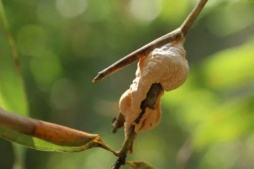

真菌 · 真菌界
竹黄 Shiraia bambusicola

竹黄寄生在竹枝上，形成粉红色至紫红色的肉质子座，使竹枝膨大如瘤，是传统中药“竹黄”的来源，不可当食用菌采食。
- 分类
- 门子囊菌门纲座囊菌纲目格孢菌目科竹黄科属竹黄属
- 栖息环境
- 竹类植物的细枝上，寄生并形成瘤状子座
- 地理分布
- 中国浙江、江苏、安徽、福建、湖南等南方竹区
- 保护级别
- 暂无评估（IUCN 未评估，中国未列入重点保护名录）
物种志
竹黄是子囊菌门竹黄科的真菌，寄生在竹类植物的细枝上。它的子座肉质，呈不规则的瘤状、块状或半球形，长 1–3 cm，初为白色，后变为粉红色、肉红色至紫红色，表面有细小的颗粒状突起；干燥后收缩变硬，呈紫褐色。子囊壳埋在子座内，子囊孢子线形、无色。被寄生的竹枝会膨大变形，形成明显的肿瘤状结构。
竹黄分布于中国南方竹区，浙江、江苏、安徽、福建、湖南等地常见，多在春夏季出现于竹枝上。它是寄生真菌，靠吸取竹子的养分生活，会让竹枝枯死，对竹林有一定危害。竹黄是传统中药，中药名“竹黄”，被认为有祛风除湿、活血止痛、止咳化痰之效，常用于风湿痹痛和咳嗽；但竹黄不可当食用菌采食，其成分复杂，过量服用可能有害。使用时应遵医嘱，不要自行采来泡酒或煮食。
形态与习性
- 子座瘤状，长 1–3 cm
- 颜色初白色，后粉红至紫红色
- 质地肉质，干后收缩变硬
- 寄主竹类植物的细枝
- 药用中药“竹黄”，祛风除湿、止咳
- 危害寄生导致竹枝膨大枯死
- 食用性不可食用，药用需遵医嘱
趣味知识
- 竹黄的子座长在竹枝上，会把竹枝撑成瘤状。
- 它鲜时粉红至紫红色，干后变成紫褐色硬块。
- 中药“竹黄”就是它的子座，用于祛风除湿和止咳。
- 竹黄是寄生真菌，不是食用菌，不能采来当菜吃。